| Note: This tutorial uses data from a Sciex TripleTOF 6600 instrument. If you prefer to use the data from a Thermo Q-Exactive Plus, see the version of this tutorial entitled Skyline DIA QE. |
In this tutorial you will learn how to use Skyline to perform targeted post-acquisition analysis for peptide and inferred protein detection and quantification using a SWATH-MS dataset acquired on a QqTOF instrument (6600 TripleTOF, Sciex) using a 64 variable width window precursor isolation scheme and a 1 hour gradient.
The data are from samples replicating the LFQBench study where quantitative benchmarking samples were created by mixing proteomes of 3 organisms in defined ratios (figure).
Initially, you will set all the parameters in the Skyline session required to work with data-independent datasets and then you will proceed to extract the quantification information from the raw data files. You will tell Skyline to deconvolute the DIA spectra to pseudo-DDA spectra using the DIA-Umpire algorithm, then search those spectra with MSAmanda to create a spectral library in order to generate peptide query parameters to analyze the DIA data. No pre-existing spectral library is required for this data analysis method.
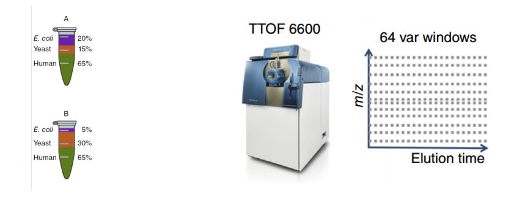
[figure adapted from Navarro, P. et al. A multicenter study benchmarks software tools for label-free proteome quantification. Nature Biotech 34, 1130–1136 (2016)]
To start this tutorial, download the following ZIP file:
https://skyline.ms/tutorials/DIA-TTOF.zip
Extract the files in it to a folder on your computer, like:
C:\Users\brendanx\Documents
This will create a new folder:
C:\Users\brendanx\Documents\DIA-TTOF
If you have been using Skyline prior to starting this tutorial, it’s a good idea to revert Skyline to its default settings. To do so:

The settings in your current instance of Skyline have now been reset to the default.
Since this tutorial covers a proteomics topic, ensure that the user interface is set to the “Proteomics interface”

Skyline is operating in Proteomics mode which is displayed by the protein icon  in the upper
right-hand corner of Skyline.
in the upper
right-hand corner of Skyline.
For DIA analysis, you will want to force Skyline to integrate peak areas for all extracted quantitative transitions. To do that:
If you know where to look, you could perform all of the following steps through various menu options on Skyline. To simplify the normal workflow for DIA, you will instead use a “wizard” which will step you through the critical choices required for Skyline to run the analysis. You will start by telling Skyline to deconvolute the DIA spectra to pseudo-DDA spectra using the DIA-Umpire algorithm, specifying various settings and the FASTA targets which you are interested in querying, searching the DDA spectra with MS Amanda, and finally building a spectral library from the DDA search results. Skyline will then automatically extract chromatograms from the original DIA files.
To get started do the following:
Skyline tells you that you need to save the current document so that it will know where you want to perform the analysis on your computer disk drive.
The Run Peptide Search wizard should appear looking like this:

The Spectral Library page of the wizard should now look like this:

The Import Results form should appear asking you how to handle the prefix and suffix shared by the two mzML files:

The wizard will advance to the Add Modifications page, where it lists all of the amino acid modifications in the document that you might want to include in the DDA search. It is important to distinguish here between fixed and variable modifications: fixed (sometimes called static) modifications are always applied to the specified amino acids. For example, Carbamidomethyl C is usually treated as a fixed modification because all cysteines in the data are expected to be alkylated. Oxidation M is almost always treated as a variable modification because oxidation is hit-or-miss depending on sample handling. Skyline’s search always treats isotopic labels as variable, but you can change whether other modifications are treated as fixed or variable by clicking on the Edit modifications button.
You can also add modifications to the document from this page. Since this Skyline document was reset to defaults, the list starts with only Carbamidomethyl (C) and Oxidation (M):

The wizard will advance In the Configure Transition Settings page. Make the following changes from the default values:
| NOTE: You could leave the ion type “p” which stands for precursor, and Skyline would extract chromatograms covering the precursor isotope distribution from the MS1 spectra in the DIA data files. However, to simplify this tutorial and reduce processing time and output file size, the description below deals only with fragment ion chromatograms extracted from the DIA MS/MS spectra. |
The Import Peptide Search form should look like:

Skyline presents the Configure Full-Scan Settings page.
Note: These extraction settings depend on the type and settings of the instrument used for data acquisition. The optimal extraction settings may be slightly different for each dataset. In this analysis you will use centroided data to save space. So you should select ‘Centroided’ and specify a ‘20’ ppm mass accuracy for extraction. With profile mode data the resolving power of the instrument can be specified.
Make the following changes to the default values:
Now you need to define a new isolation scheme according to the parameters defined on the instrument for data-independent acquisition.
Note: In this example, we used 64 variable width windows that covered the range from 400 to 1200 m/z with 1 m/z overlap to support 0.5 m/z excluded margins at the edges of the quadrupole range.
This brings up the Edit Isolation Scheme form in which you should do the following.
The Edit Isolation Scheme form should now look like this:

Skyline has worked out the Start and End m/z values for the DIA isolation ranges measured on the mass spectrometer. You can see that they overlap by 1.0 m/z to compensate for the overlap, Skyline has added a 0.5 m/z margin to each side of the isolation windows, which it will exclude from consideration during chromatogram extraction. To see this in action:
You will see the Start and End values shift inward by 0.5 m/z and the ranges will no longer overlap. These are the ranges that Skyline will use when matching peptide precursor m/z values to acquired spectra for fragment ion chromatogram extraction.
To visualize the isolation scheme:
You will see a form like the one below:

You can click-and-drag a rectangle to zoom in or use the mouse scroll-wheel, and see the margins. If you uncheck and re-check Show margins, the graph title will switch between Measurement Windows and Extraction Windows, and the pink margin bars will disappear and re-appear. There is no red for Show gaps or yellow for Show single cycle overlaps, which are both errors DIA isolation scheme design.
The Import Peptide Search wizard should now look like this:

You will see the Import FASTA page, which should look like:

The Import target proteins from a separate FASTA option tells Skyline that you want to import a (usually smaller) set of proteins as targets but run the MS Amanda search on a different FASTA (usually a full proteome). This is useful because doing a DDA search on a small FASTA introduces problems with estimating FDR.
| NOTE: At this point, you could choose to perform a proteome-wide analysis by instead navigating to the DDA_search subfolder and double-clicking the full FASTA sequence file “nodecoys_3mixed_human_yeast_ecoli_20140403_iRT.fasta” that will be used in the peptide search. This would produce quite a lot more targets and take more time to process, but is still feasible on most modern laptops. |
After setting these options, the page should look like:
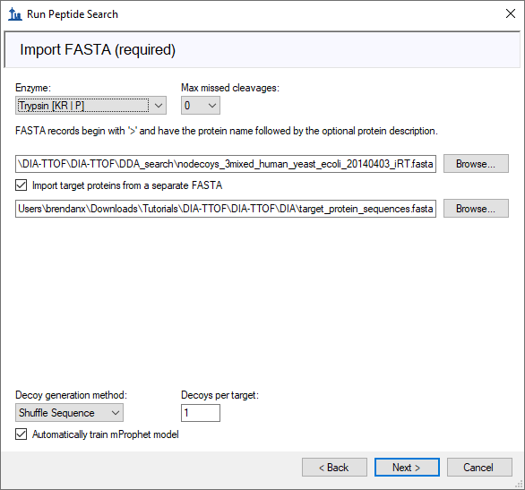
The wizard will advance to the Adjust Conversion Settings page. For this tutorial, this page will show DIA-Umpire settings:
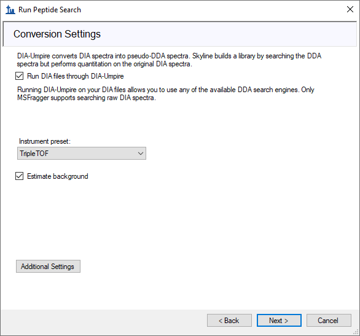
The main setting here is “Instrument preset” which sets some established defaults for DIA-Umpire parameters according to what kind of instrument collected the data. All DIA-Umpire parameters can be viewed and changed by clicking on the “Additional Settings” button. The DIA-Umpire manual should help to understand what these settings do.
The wizard will advance to the Adjust Search Settings page. Here you can set the most important parameters for the DDA search. For this tutorial, do the following:
The form should now look like this:
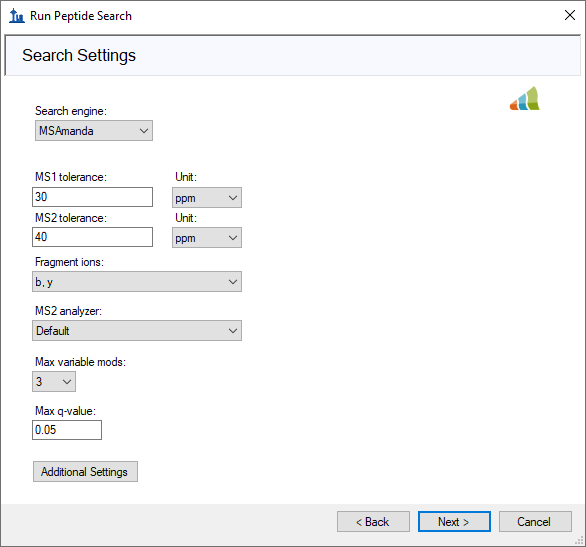
The Max q-value field sets a false discovery rate (FDR) limit allowed for the peptide matches in the search results. In this tutorial, you will use a 5% FDR because this is a small dataset.
Note: The field often uses a 1% FDR (maximum q value of 0.01) for searches like this.
The DDA Search page will show you the progress of the DIA-Umpire deconvolution and MS Amanda search. You may also cancel the process here.
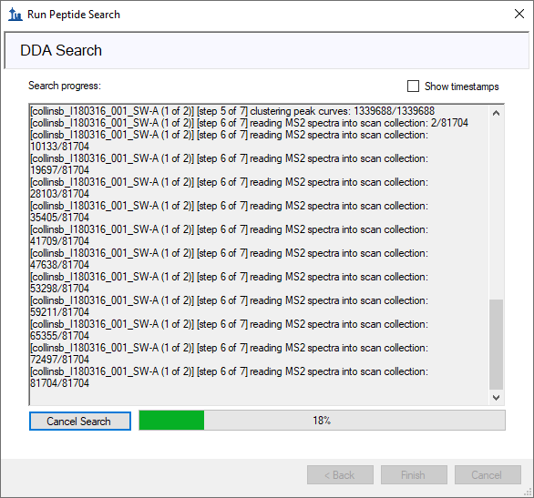
After the search is finished:
Skyline should begin building the library, showing progress in a form titled Build Peptide Search Library. When the library build is complete will attempt to calibrate iRT values from the peptide search results based on the Biognosys iRT standards which were spiked into these samples. This should succeed and present a summary form like the one below:
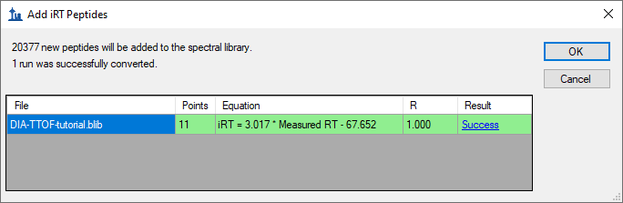
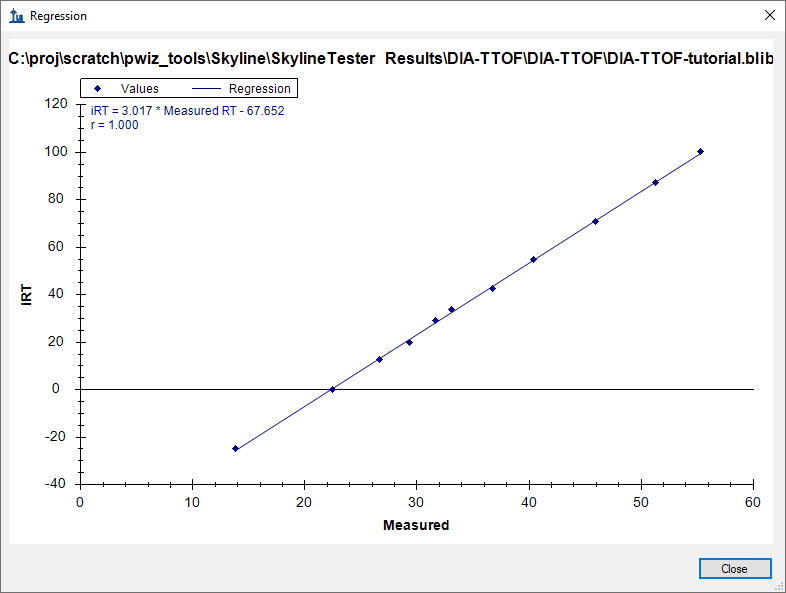
Skyline will ask if you want to recalibrate the iRT standard values onto the regression line calculated and shown in the graph above.
Skyline presents a long list of peptides with ambiguous matches. In other words, the only evidence for these peptides came from spectra which were matched to multiple peptides, making those spectra and matching peptides not ideal for subsequent targeted analysis.
You should be presented with a form describing the targets calculated based on your settings and the FASTA sequence text provided that looks like this:
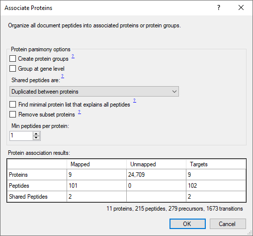
Notice that with a Min peptides per protein filter of “1” the 13 proteins found in the FASTA file produce 9 Remaining proteins. This is because four proteins have no peptides which are found in the spectral library. If you click Keep all, you will see a warning “4 empty proteins will be added”, but switch back before continuing to avoid adding the empty proteins to your targets list.
Skyline begins extracting chromatograms:
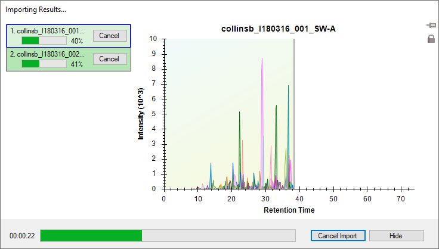
After the import is completed, Skyline will show you the mProphet model you requested on the Import FASTA page of the Import Peptide Search wizard. It should look like this:
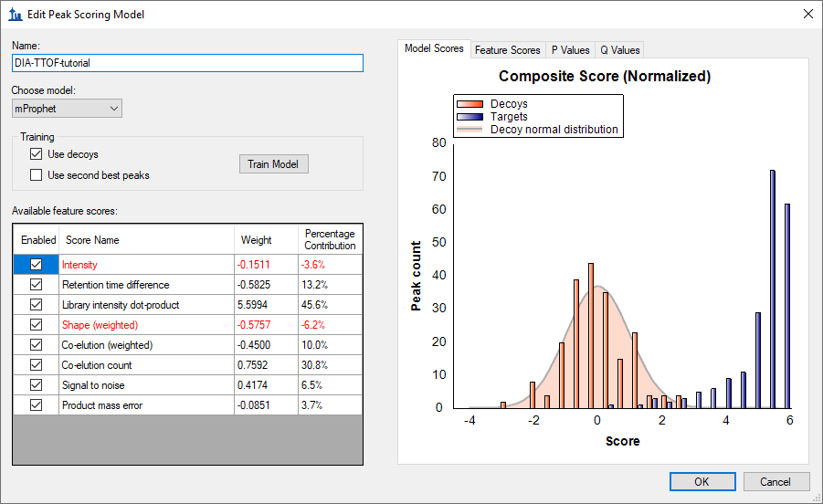
It has already been used to re-score the 10 best peaks Skyline found in each set of chromatograms, using its default score, and re-choose the peaks to be the ones with the best mProphet scores. These mProphet scores (given the name Detection Z Score in Skyline) are scaled such that 1.0 is 1 standard deviation from the mean mProphet score for the distribution of similar best peaks for the sequence shuffled decoy peptides you requested. Each has also been assigned a q value (given the name Detection Q Value in Skyline).
Next you will manually inspect some of the chromatography and underlying spectra. To do that, you will want the Retention Times and Peak Areas views are showing:
Now both views should be visible. You can configure them optimally on the screen by doing the following:
You can perform that same operations shown below with the Library Match window.
Note: In order to dock a window like this, the mouse arrow cursor must be placed inside one of the docking icons, in this case, at the top. Once you begin dragging with the left-mouse button held down, Skyline will show the docking icons and a transparent blue rectangle where the window will be placed if you were to release the left-mouse button at that moment.
| 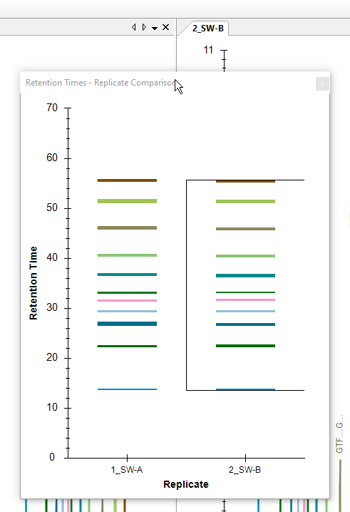 | 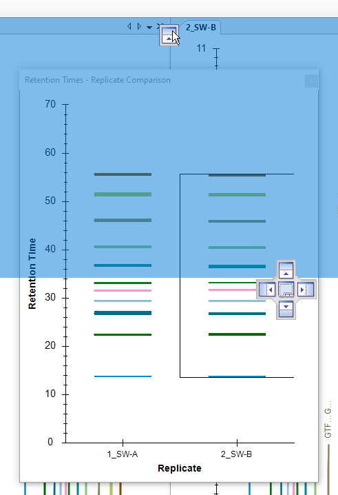 |
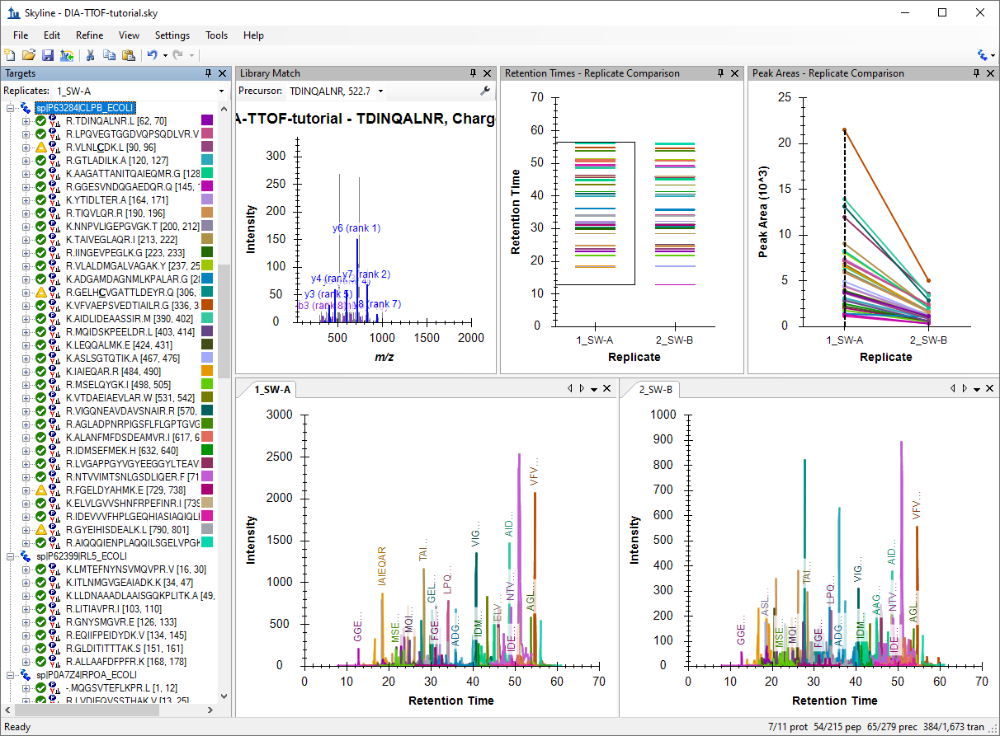
You should see all of the peptides for this protein shown on the various plots (chromatogram, peak areas, and retention time replicate graphs). The screenshot above is an example of when one protein is selected and all of the peptides for this protein are summarized in each of these views (except library match window where nothing is shown).
Based on what you see in the Peak Area - Replicate Comparison plot, does this protein appear to be differentially regulated? Recall that the expected fold-change ratio between A:B is 4:1 for E. coli.
You get specific information for this peptide in all of the views, as shown below:
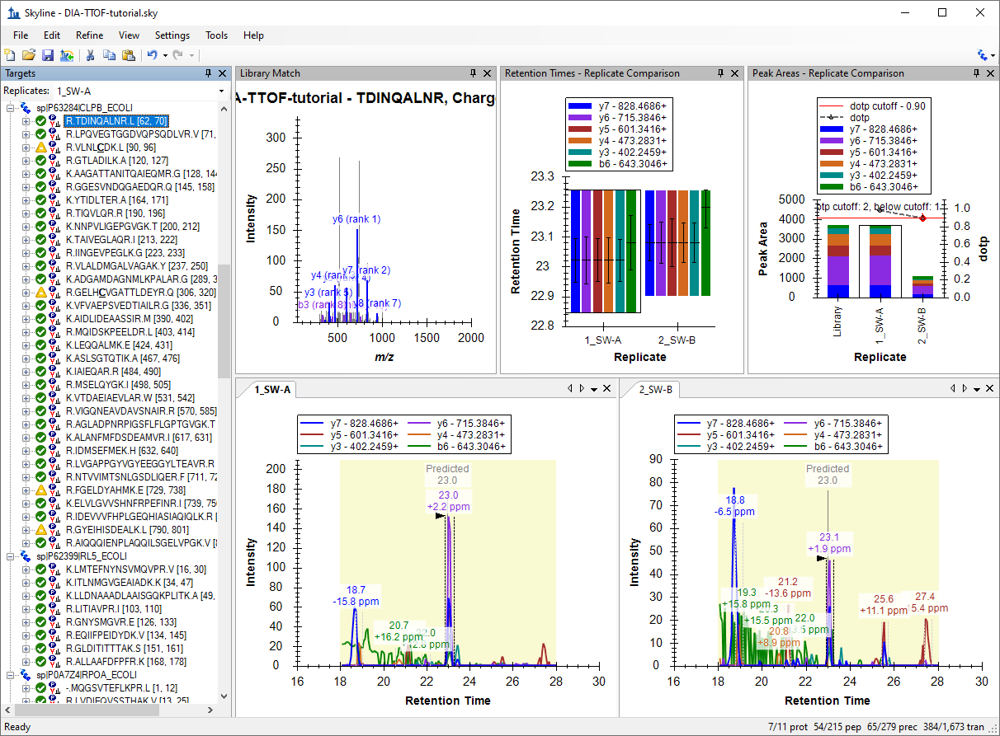
Examine the peak area patterns for the rest of the peptides belonging to this protein. Is the quantitative pattern for the peptides from this protein consistent with the expected differential regulation pattern (4:1)?
NOTE: If there is more than one precursor charge state for a given peptide sequence these are extracted and scored separately. You can look at these by clicking the + next to the peptide sequence and clicking on the individual charge states.
Examine the replicate peak areas from the protein level view and the peptide level view. Are the peak areas consistent with the expected ratio (1:1)? What about the yeast proteins (1:2)?
Notice that if you hover the cursor over a chromatogram curve a circle appears on the curve with the same color as the curve.
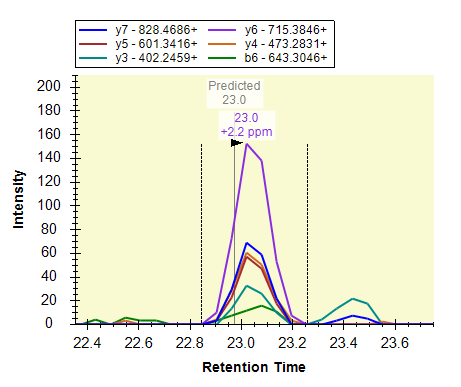
Skyline will open the Full-Scan view on the spectrum from which the chromatogram point was extracted zoomed on the ion that you selected.
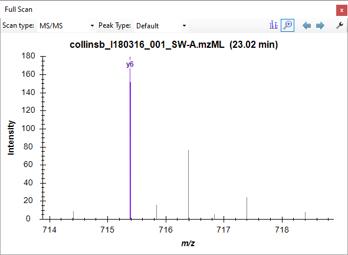
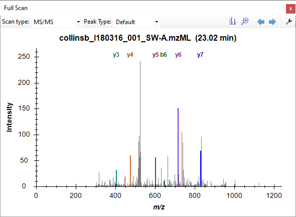
Explore the data further manually (including some decoys).
You can examine the mass accuracy and retention time prediction accuracy to determine whether the optimal extraction parameters have been used or whether some adjustment may improve the results.
This will show the distribution of mass errors over the data set. Could the extraction window (±20 ppm) have been further optimized? Generally the mean error +/- 3 standard deviations is sufficient. If the histogram appears cut off, however, with high counts at the extremes then you may want to widen your extraction windows.
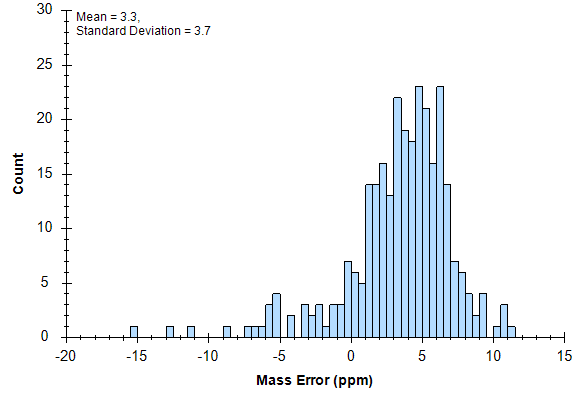
Note that the distribution appears to have two peaks, one around 0 and one around 5. To understand this better, it helps to know that these are the mass error values across all 6 runs.
You will see that the mean value ranges from -0.4 to 4.5, while the standard deviation value ranges from 3.7 to 4.5. Using the simple calculation Mean + 3 * SD = 4.5 + 4.5*3 = 18 PPM at the most extreme, this seems to indicate that a 20 PPM tolerance is a pretty good approximation of what these data require.
To view the mass errors for the decoys also:
To the see the linear regression used to predict the target peptide retention times based on the iRT peptides and library iRT values from the target peptides:
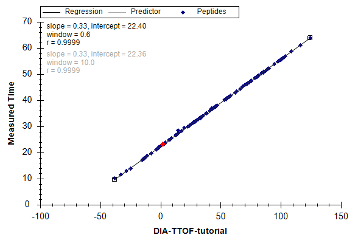
This will show the deviations from the predicted retention times in this data set. Could the extraction window (± 5 minutes) have been further optimized for this analysis? Check the decoys as well.
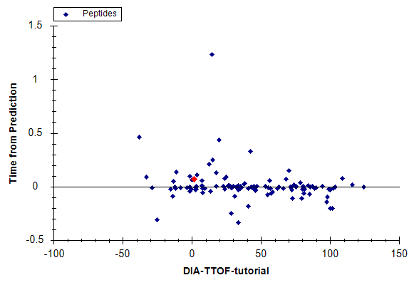
Note: The spectral library for this analysis was constructed from the DIA-Umpire pseudo-DDA spectra. As such, the accuracy of the retention time predictions are very good. Retention times from external spectral libraries acquired on different instruments, at different times, from different samples would lead to larger errors in these predictions.
At this point, this tutorial may be continued at another tutorial, Analysis of DIA/SWATH Data. If you have not viewed that tutorial before, we recommend that you do it now, starting at the Sample Annotation and Quantitative Comparison sections, to learn how to perform a quantitative analysis once some DIA data has been imported into Skyline.
Congratulations! You have completed your first analysis using Skyline’s DIA-Umpire implementation. You have learned how to use the Import Peptide Search wizard to seamlessly make a spectral library out of DIA data, extract quantitative chromatograms from them, and create and apply an mProphet statistical peak detection model to improve peak selection and assign q values which can be used to control the false discovery rate among the peak areas you used in your group comparison. You learned to first assess the DIA data quality with the mass error and retention time regression plots.
Now consider retrying these steps with the proteome-wide FASTA file, using all 6 DIA files as input, and/or including precursor ions to see how this works with a broader target set and/or another dimension (precursor ions in MS1 spectra). Or move on to trying this with your own data.